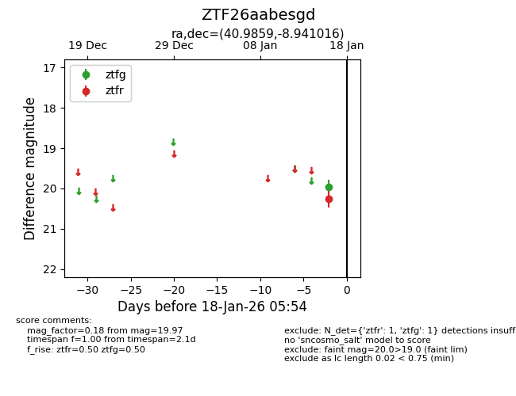
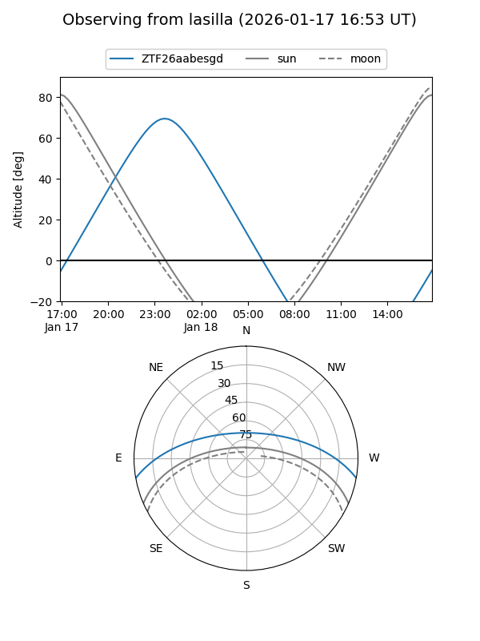
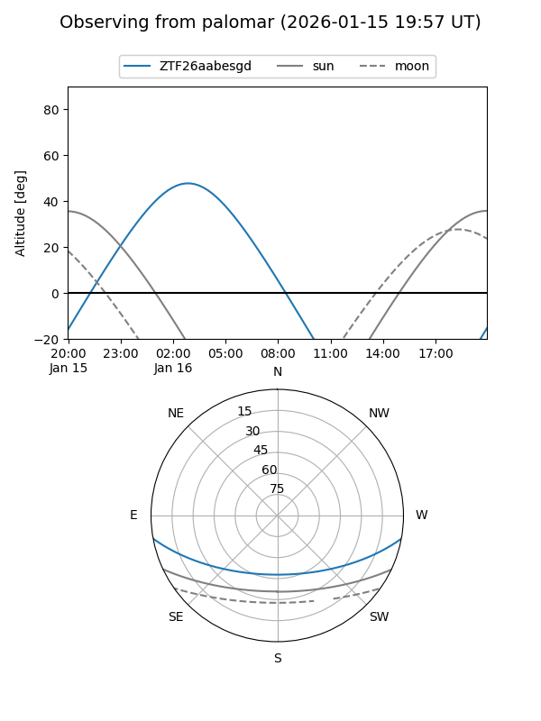

ZTF26aabesgd
Target ZTF26aabesgd at 2026-01-16 05:55
Aliases and brokers:
FINK: link
Lasair: link
ALeRCE: link
alt names
ZTF26aabesgd (ztf,fink_ztf)
Coordinates:
equatorial (ra, dec) = 40.9859,-8.94102
equatorial (HMS+DMS) = 02:43:56.63,-08:56:27.66
galactic (l, b) = (183.8573,-57.80281)
Flags:
Photometry:
last ztfg=19.97
1 ztfg detections
Lightcurve

Visibility


Additional plots